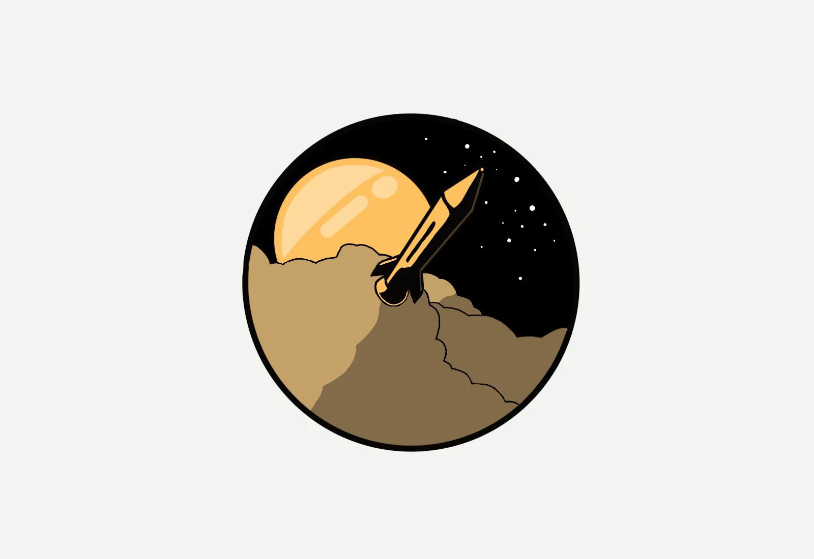
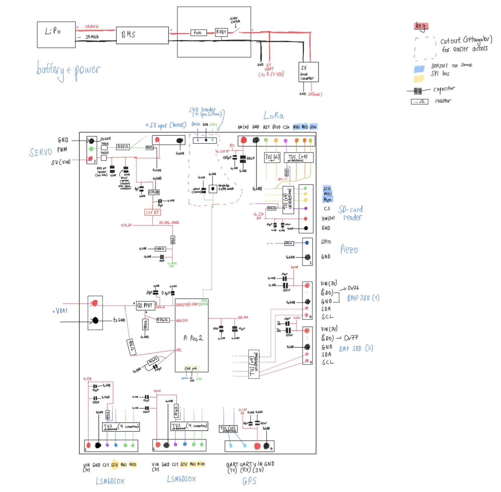

Embedded systems / Aerospace
Astraeus 1
A model rocket I'm designing, with my own flight computer, redundant sensors, live telemetry and parachute recovery.
- Role
- Solo project
- Timeline
- Dec 2025 - ongoing
- Stack
- RPi Pico 2 · LoRa · GPS · KiCAD
- Status
- Design phase · nothing built yet

Without a permit, I get 20 g of propellant and 120 m of altitude.
Outside a rocketry club, German rules allow 20 g of propellant per flight without an ascent permit, and the rocket can't go higher than 120 m. That doesn't leave much room for an impressive flight.
So I'm focusing on what happens inside the rocket. Astraeus 1 will log altitude, acceleration and orientation, send them to a ground station during the flight and release its own parachute based on sensor data instead of a delay charge.
Most of the design follows from the motor, a Klima C6-P with 10 Ns of impulse, 6 N average thrust and a 1.6 s burn. Klima lists a maximum lift-off mass of 160 g and my target is 175 g, but that limit assumes a launch rod of about a metre. On a 3 m rail, I calculated an exit speed of about 17.9 m/s, compared to 12.8 m/s on the rod. That's fast enough for the fins to keep the rocket stable, so I'm planning to build a rail.
If the rocket ends up too heavy, I already know what to cut first: a smaller servo, a smaller battery and a lighter parachute, which together save about 16 g.
Every sensor the parachute depends on is doubled: two BMP388 barometers and two LSM6DSOX IMUs. The flight computer compares each pair, and if one sensor disagrees, it gets flagged instead of averaged in.
To detect apogee, the flight computer uses the vertical speed from both barometers. It only accepts it after a minimum time and altitude, and after several samples in a row agree. As a backup, a timeout based on the simulated flight can also deploy the parachute, but only once launch has been confirmed. If the parachute opens too early, it can tear off at speed. If it opens too late, it opens too close to the ground.
The flight computer has no connection to the igniter. Ignition uses certified igniters and a commercial launch controller at an approved launch site, completely separate from my board.
The firmware has nine states, from BOOT/SELFTEST to FAULT. In SAFE, the deployment pin is high-impedance, and a mechanical safety pin has to be pulled by hand before the servo can move. During the flight, the ground station can only read telemetry. It can't send commands.
I'm not gluing anything in the avionics bay. The modules plug into JST connectors on a printed tray held by M2 screws, so I can unplug sensors, test them on the bench and reuse them in the next rocket. How they're mounted also affects the measurements: the IMUs are fixed rigidly and aligned, the GPS sits on foam, and the barometer port is shielded from direct airflow without being sealed.
The board will be a four-layer design with one continuous ground plane, because a switching converter, an 868 MHz transmitter and two IMUs all share it. The sensors and the radio run on separate 3.3 V rails, so the radio can't pull down the IMUs' supply voltage when it transmits.

On the launch pad, a piezo buzzer is the only feedback. Three short beeps mean the sensors and battery are fine. Four short beeps mean the SD card is missing or can't be written to. Two short beeps on repeat mean a sensor didn't start. No sound means the Pico isn't running. There's no continuous low-battery warning, because a buzzer that stays on would drain the battery even faster.
Right now, Astraeus 1 is a set of hand-drawn schematics, a parts list and a current budget. Next come the KiCAD schematics and PCB layout, the airframe in CAD and an OpenRocket simulation to check stability and rail-exit speed. After that I'll order parts and start bench testing, including breaking things on purpose: unplugging sensors, forcing the barometers to disagree and resetting the board in every flight state. Before the first flight, I'll ask a rocketry club to check the rocket.
I'm aiming to have it in an advanced stage by summer 2027, with the first flight by summer 2028 at the latest.
I've also sketched a second version with a camera, a small payload and thrust vector control, which might become a Jugend forscht entry in 2028/2029. The first flight will be called Above and Beyond.